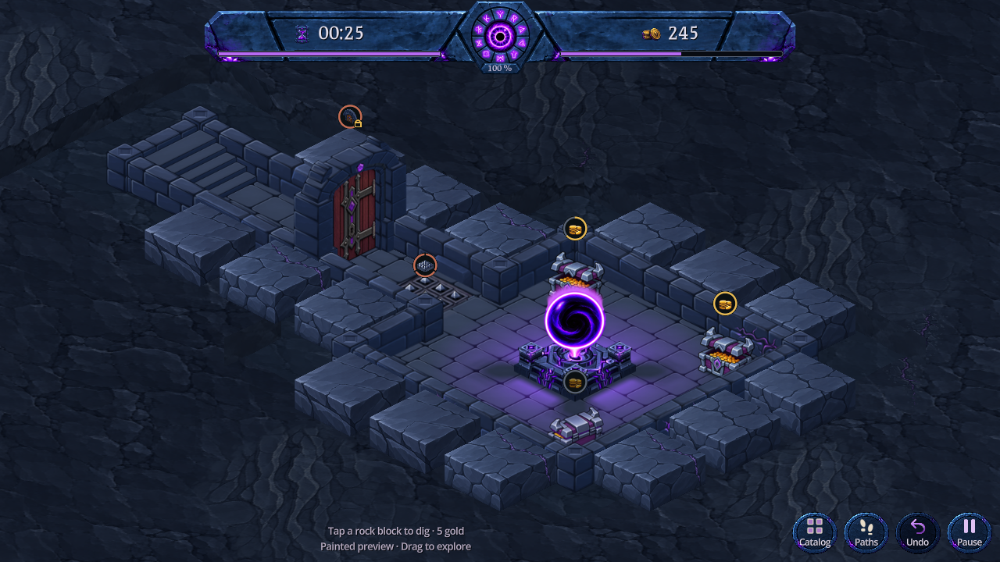
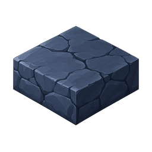
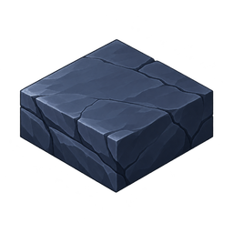
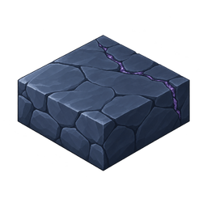

Le volume validé, peint dans les tons du donjon : roche bleu sombre, fractures naturelles et quelques veines de corruption. Les blocs représentent les cases de roche accessibles au creusement ; toucher le dessus ou une face visible creuse la case pour 5 pièces.

Capture Godot · 1280 × 720 · Peinture



La corruption est une variation visuelle : elle ne change ni le coût ni le résultat du creusement. Les images ci-dessus montrent les textures sources réduites ; les captures montrent leur teinte ajustée dans la scène.
Ouvrir DigBlocksPreview.tscn dans Godot. Aperçu isolé, sans sauvegarde joueur. Le jeu principal conserve pour l'instant son système précédent.
Géométrie : empreinte 0,74 case, marge 0,13, hauteur 0,313333 case égale à celle des murs. La peinture est recalée sur les trois faces du volume validé, sans modifier son contour ni ses zones de contact.
Trois textures de 256 × 256 : 143 840 octets de PNG et 768 Kio de pixels RGBA. Génération avec l'outil ImageGen intégré ; originaux et consignes conservés : A, B, corruption. Tailles et empreintes.
Reproduction : node tools/prepare_dig_block_art.cjs, import Godot, puis godot --path . --script res://tools/capture_dig_blocks.gd. 58 vérifications natives réussies : hauteur, sélection sur dessus et côtés, creusement, déplacement de vue et annulation. Captures bureau, paysage et portrait inspectées. Pas de validation sur téléphone physique.